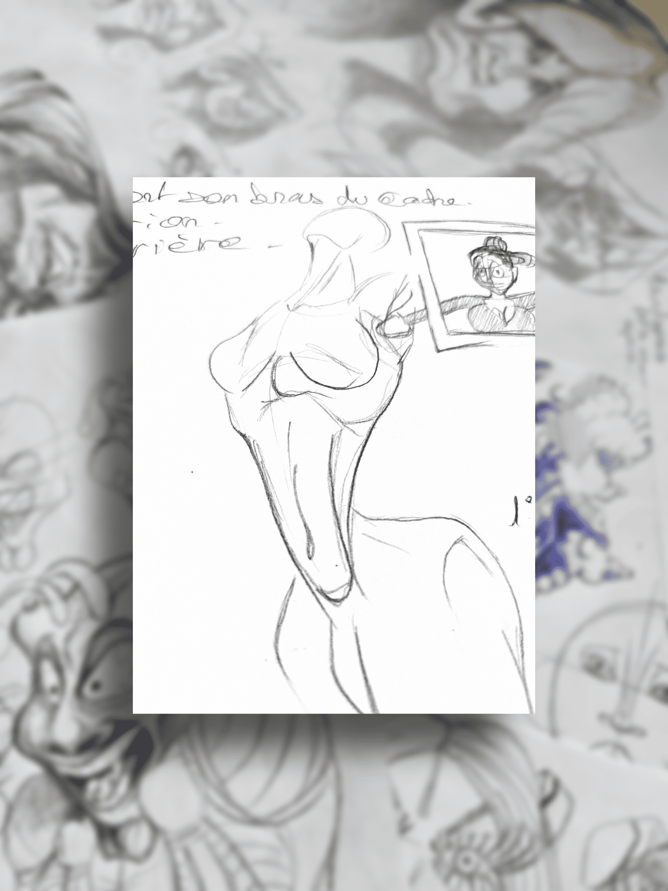
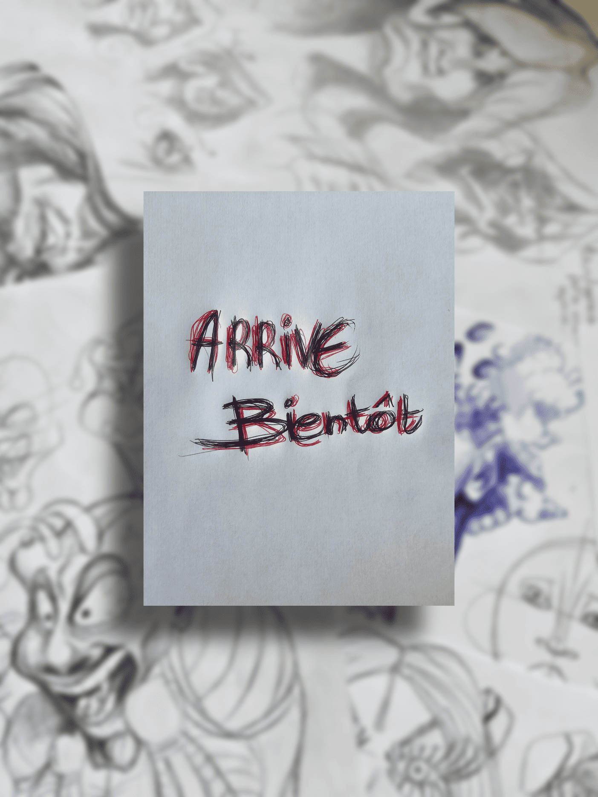
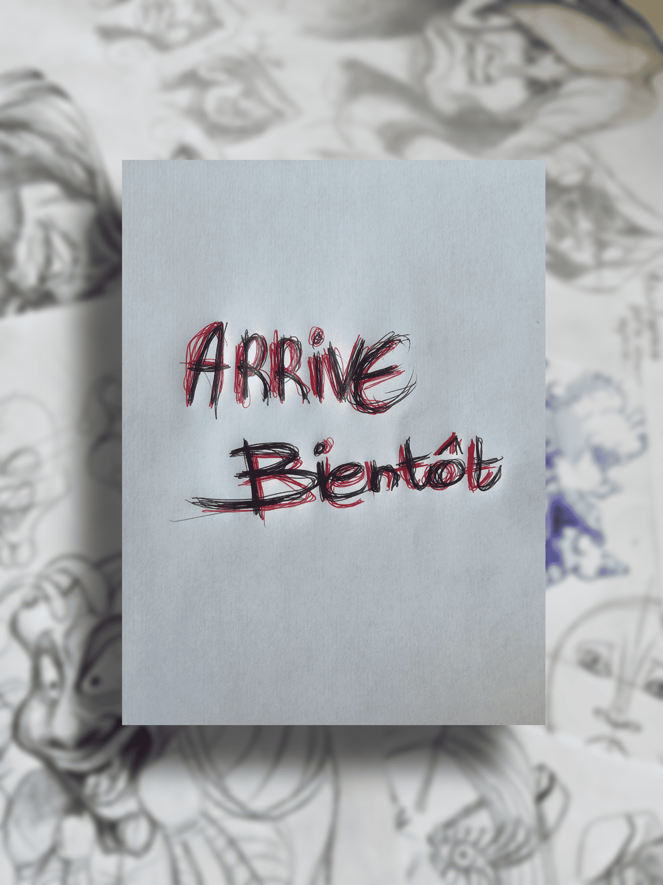

vitrine 03 / expression corporelle
Gestes, tensions & corps expressifs.
Cette vitrine rassemble les recherches autour du corps : postures, attitudes, mouvements, tensions musculaires, expressions physiques et compositions vivantes.
Ici, le corps n’est pas seulement anatomique. Il devient langage, grimace, poids, déséquilibre, énergie ou théâtre silencieux.
note de mouvement
Un corps raconte avant même un visage.
Une posture, une main, une épaule, un dos courbé, une tension ou une direction du regard peuvent suffire à raconter une scène entière.
esprit de la vitrine
Dessiner ce que le corps trahit.
Cette section explore les gestes, les attitudes, les postures étranges, les tensions humaines et les compositions où le corps devient le centre de l’expression.
matière corporelle
Corps · Geste · Tension
- Postures et attitudes humaines
- Gestes expressifs
- Tensions musculaires
- Silhouettes en mouvement
- Compositions autour du corps
- Futures séries corporelles
recherches / corps vivant
Fragments d’expression corporelle.
Cette vitrine évoluera avec des études de poses, des recherches corporelles, des scènes humaines, des compositions expressives et des œuvres originales construites autour du mouvement.

Geste & déséquilibre

Corps expressif
futur des collections
Ce qui arrivera progressivement.
originaux corporels
Œuvres autour du corps
Dessins originaux centrés sur les attitudes, postures, tensions, silhouettes et compositions humaines.
bientôt
éditions futures
Prints & séries corporelles
Futures éditions autour du mouvement, des attitudes humaines et des compositions expressives.
ouverture future
recherches
Pages de carnet
Croquis, essais, fragments de poses, recherches de corps et notes visuelles autour de l’expression physique.
carnet évolutif
commande spéciale
Demander une création autour du corps.
Il sera possible de demander une composition corporelle, une posture expressive, un personnage en mouvement, une scène humaine ou une recherche plus expérimentale.
vitrine évolutive
Cette section grandira avec les recherches.
Nouvelles postures, nouvelles compositions, nouveaux corps, nouvelles tensions. La vitrine évoluera au rythme du carnet.
direction
Corps · Attitudes · Tensions · Carnet vivant
Cette vitrine explore le corps comme langage : équilibre, poids, énergie, expression silencieuse et mouvement vivant.